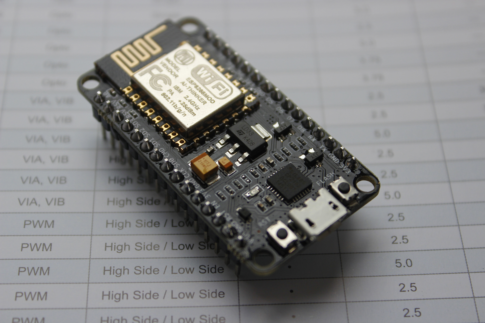
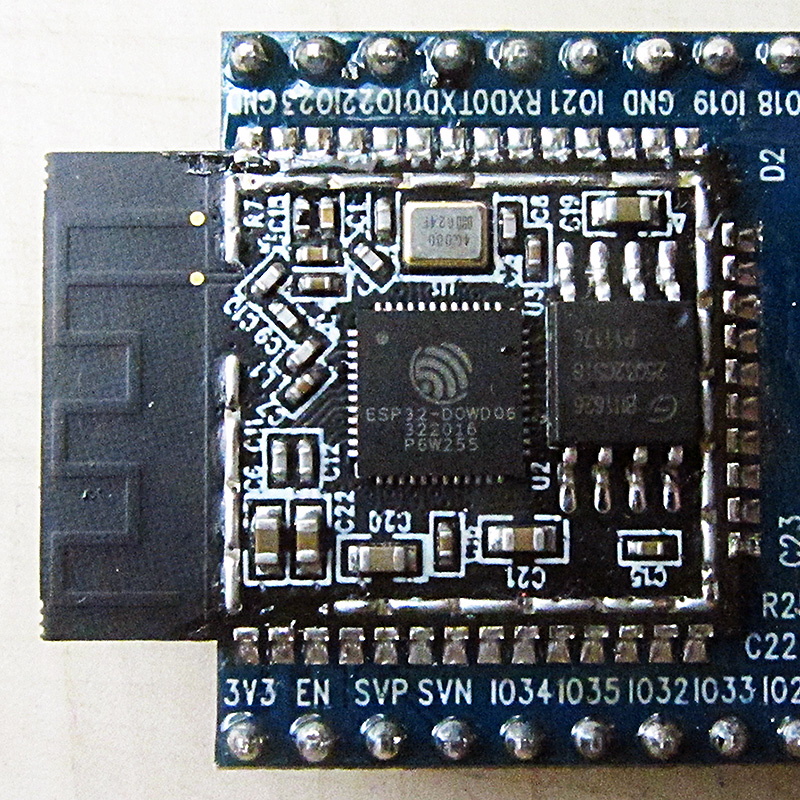

ESP8266 — NodeMCU ESP-12E

- Board ID:
esp8266-nodemcu
- Modul: ESP-12E berbasis ESP8266EX
- OLED: SSD1306 I2C eksternal; resolusi dan alamat harus diperiksa pada modul.
Pin OLED I2C
| Sinyal OLED | Pin NodeMCU | GPIO |
|---|
| SDA | D2 | GPIO4 |
| SCL | D1 | GPIO5 |
| VCC | 3V3* | — |
| GND | GND | — |
D1 = GPIO5D2 = GPIO4D5 = GPIO14D6 = GPIO12D7 = GPIO13
Pin D3/GPIO0, D4/GPIO2, dan D8/GPIO15 berperan dalam kondisi boot. GPIO6–GPIO11 umumnya dipakai flash internal. Hindari menggunakannya sebagai GPIO proyek tanpa memeriksa board.
ESP32 — DevKit V1

- Board ID:
esp32-devkit
- Modul referensi: ESP32-WROOM-32; board DevKit V1 dapat berupa klon dan memiliki variasi.
- OLED: SSD1306 I2C eksternal; resolusi dan alamat harus diperiksa pada modul.
Pin OLED I2C
| Sinyal OLED | Pin ESP32 | GPIO |
|---|
| SDA | IO21 | GPIO21 |
| SCL | IO22 | GPIO22 |
| VCC | 3V3* | — |
| GND | GND | — |
I2C: SDA 21 / SCL 22SPI umum: MOSI 23 / MISO 19 / SCK 18
GPIO34–GPIO39 hanya input. GPIO6–GPIO11 umumnya digunakan flash internal. Pin strapping seperti GPIO0, GPIO2, GPIO5, GPIO12, dan GPIO15 dapat memengaruhi boot.
Lihat diagram pinout ESP32 DevKit V1 (ilustrasi; periksa board aktual).